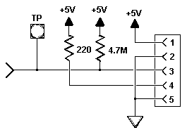
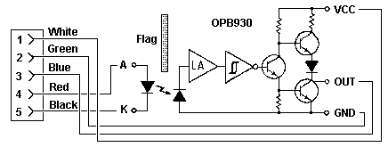
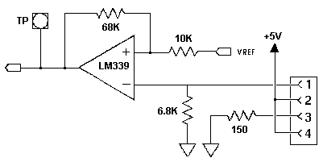
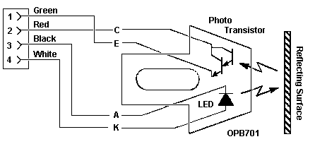
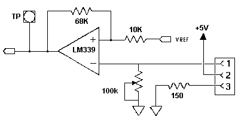
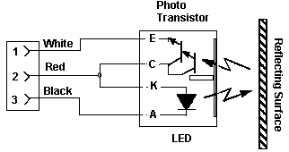
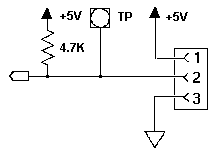
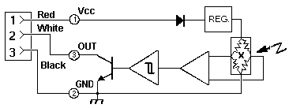
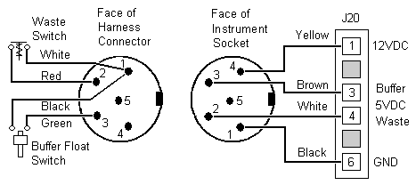

Home and Index Sensor Drawings
Purpose
This document provides information regarding the Index and Home sensors used in the Access instrument.
5 Wire Home / Index Sensors


| Pin | Color | Function |
|---|---|---|
| 1 | White | 5 VDC |
| 2 | Green | GND |
| 3 | Blue | OUT (TP = 0.7 V flag in sensor, 4.8 V flag open or sensor disconnected) |
| 4 | Red | 5 VDC |
| 5 | Black | GND |
| Where Used | Quantity |
|---|---|
| Pipettor Module | 4 |
| Analytical Module | 12 |
| Sample / Reagent Carousel | 3 |
| Fluidics | 2 |
4 Wire Waste Bag Sensor


| Pin | Color | Function |
|---|---|---|
| 1 | Green | OUT (TP = 5 V no surface or sensor unplugged, 0.7V surface present)
Note: To bypass the sensor, connect pin 1 to pin 2 on the interface PCB.
|
| 2 | Red | 5 VDC |
| 3 | Black | GND |
| 4 | White | 5 VDC |
3 Wire RV Sensor


| Pin | Color | Function |
|---|---|---|
| 1 | White | OUTPUT (TP = 4.2 V vessel present, 0 V sensor disconnected)
Note:
|
| 2 | Red | 5 V power. |
| 3 | Black | Ground |
3 Wire Wash Carousel / Incubator Belt Hall Effect Home Sensor


| Pin | Color | Function |
|---|---|---|
| 1 | Red | 5 V DC |
| 2 | White | OUT (TP = 5 V no magnet or sensor unplugged, 0.7 V magnet present) |
| 3 | Black | GND |
Unibase Fluids Sensors

| Pin | Color | Function |
|---|---|---|
| 1 | Black / White | Ground |
| 2 | Red | Waste Sensor (TP2 and J20-4, 0 V Full, 5 VDC Empty or sensor disconnected) |
| 3 | Green | Buffer Sensor (TP1 and J20-3, 0 V Full, 5 VDC Empty or sensor disconnected) |
| 4 | N/C | N/A |
| 5 | N/C | N/A |